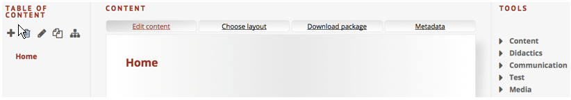

At Creyoco the navigation of your learning module is located in the left column. By default, the item “Home” is available.
2.3 NAVIGATION
Control panels of navigation at a glance
| ADD PAGE Enter a name for your new page and click on “Create”. A new navigation point is created. |
|
| REMOVE PAGE The currently selected page is deleted. Deletion must be confirmed with “Yes”. |
|
| RENAME PAGE The name of the currently selected page can be changed. Confirm the new name of the page with the return key. |
|
| DUPLICATE PAGE The selected page is doubled. |
|
| MORE... A second line with local panels for navigation is displayed or hidden. |
|
| DEMOTE PAGE The selected page is indented one level. |
|
| PROMOTE PAGE The selected page is moved up one level to the left. |
|
| MOVE UP The selected page is moved upwards within a level. |
|
| MOVE DOWN The selected page is moved down within a level. |